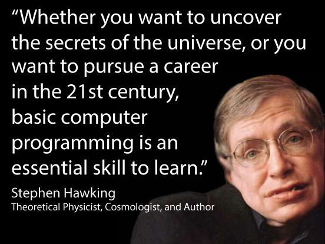
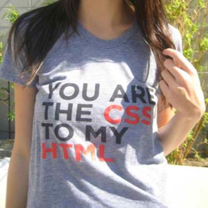

Πληροφορική & Επαγγελματική Σταδιοδρομία
 ©2013 Τάσος Κουτουμάνος tafkey.eu
©2013 Τάσος Κουτουμάνος tafkey.eu
Όχι βέβαια!
Μερικοί όμως καλοί*
θα χρειαστούν!
Και μερικές!
Τεχνολογίες της Πληροφορίας και των Επικοινωνιών ΤΠΕ
- Διαδίκτυο
- Δίκτυα υπολογιστών
- Επιστήμη των υπολογιστών
- Λογισμικό
- Μετάδοση δεδομένων
- Πληροφορική
- Πολυμέσα
- Τεχνολογίες Επικοινωνιών
- Υλικό
- Χρήση των ΤΠΕ στην καθημερινή ζωή
Πληροφορική ή επιστήμη υπολογιστών ονομάζεται η θετική και εφαρμοσμένη επιστήμη η οποία ερευνά τα θεωρητικά θεμέλια και τη φύση των πληροφοριών, των αλγορίθμων και των υπολογισμών, καθώς και τις τεχνολογικές εφαρμογές τους σε αυτοματοποιημένα υπολογιστικά συστήματα, από τη σκοπιά της σχεδίασης, της ανάπτυξης, της υλοποίησης, της διερεύνησης, της ανάλυσης και της προδιαγραφής τους.

Η Πληροφορική είναι επιστήμη, είναι όμως και τέχνη!
Αυτά είναι μόνο η μισή αλήθεια!

είτε θέλεις να αποκαλύψεις τα μυστήρια του σύμπαντος
ή να ακολουθήσεις μια καριέρα στον 21ο αιώνα,
οι βασικές γνώσεις προγραμματισμού
είναι μια θεμελειώδης γνώση
που θα πρέπει να κατακτήσεις.
Η Πληροφορική είναι παντού....
στο γραφείο, στο γυμναστήριο, στο ιατρείο, στο χωράφι, στο γυμναστήριο και όπου αλλού μπορείς να φανταστείς!
ο μόνος περιορισμός είναι η φαντασία σου
... και οι γνώσεις σου!
Η συνέχεια;
online, στο σχολείο, μεταξύ σας...
Απαιτήστε το!
Τέλος;
Όχι! Αυτή είναι μόνο η αρχή!

* Καλή τύχη ;-)